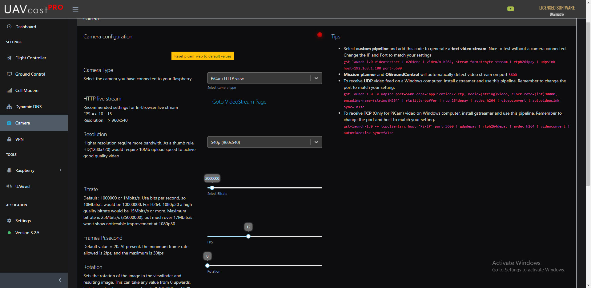
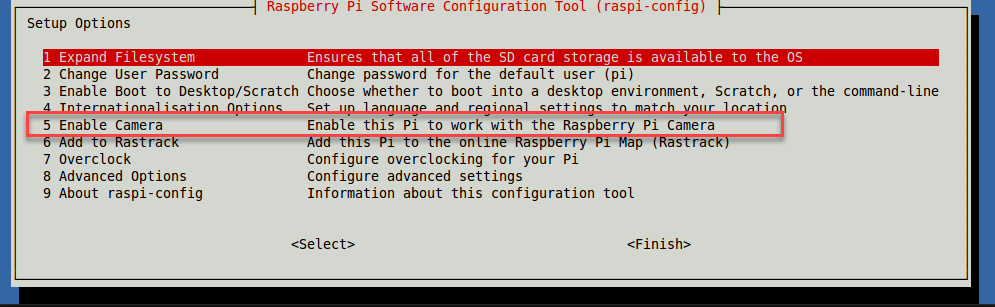
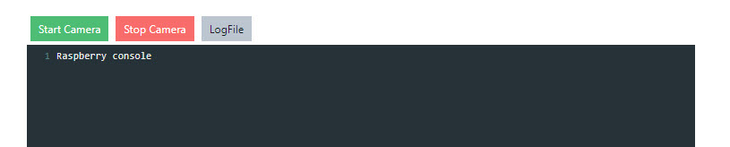
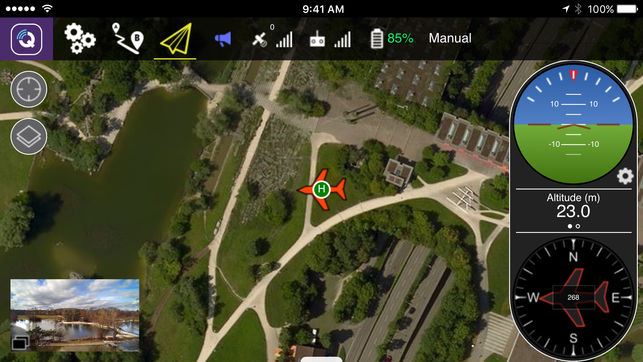
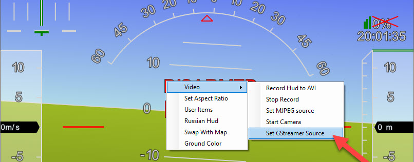

Configuration

UAVcast-Pro uses the well known media-handling library gstreamer to proccess the video pipeline towards the Ground Control Station. It supports PiCam, Logitech C615, Logitech C920 out of the box.
Info
Remember to activate camera in Raspberry Config if you are using PiCam.
sudo raspi-config

Camera Type¶
- Options:
PiCam HTTP, PiCam TCP/UDP, C615, C920, Custom Pipeline
Each camera uses different start code, also known as pipeline to be able to communicate or process the video source. UAVcast-Pro has three diffrent cameras pre-defined from the dropdown menu. However, if your camera is not listed then you can insert a custom pipline with the needed plugins to match your current camera model and type.
You can also send a test video by inserting the pipeline below to UAVcast-Pro custom field section, nice way to check if everything is working without the camera itself.
Remember to change the Destination address:
gst-launch-1.0 videotestsrc ! x264enc ! video/x-h264, stream-format=byte-stream ! rtph264pay ! udpsink host=GCS_ADDRESS port=5600
Take a look at this page for pipeline examples http://wiki.oz9aec.net/index.php/Gstreamer_cheat_sheet
UDP / TCP / HTTP protocol¶
- Default value:
UDP
UAVcast-Pro supports UDP, TCP and HTTP live in-browser viewer for PiCam, other cameras only support UDP at the moment. Multiple users may view live video using the HTTP protocol.
GCS Destination¶
All destinations you have added in Ground Control page will be shown in the dropdown list. It is only possible to select one destination for video.
Video resolution¶
- Default value:
240p (320x240) - Options:
240p (320x240), 480p (720x480), 540p (960x540), HD (1280x720), Full HD (1920x1080)
Tip
If your broadband connection has a low transfer speed, then lower the resolution to get smooth video.
Destination Port¶
- Default value:
5600
Change the Video network port. Mission Planner and QGroundControl supports video in HUD by default on port 5600.
Bitrate¶
- Default value:
2000000
Change the Bitrate value.
Tip
If your broadband connection has a low transfer speed, then lower the Bitrate to get smooth video.
Example: 800000
Frames Pr.second¶
- Default value:
20
Change the FPS value.
Tip
If your broadband connection has a low transfer speed, then lower the FPS to get smooth video.
Example: 8
Start Video Stream¶
To verify if camera will start properly, simply press the start button. If any issues, press the Log button to reveal any problems.

Receive UDP video (Windows / Mac / Linux / Android)¶
Ubuntu¶
If you're going to stream to a Ubuntu PC, install the some packages locally beforehand.
sudo apt-get update
sudo apt-get install gstreamer1.0-tools gstreamer1.0-plugins-good gstreamer1.0-plugins-bad
Android¶
-
Download and install QGroundControl for Android.
-
Find IP address of your device in preferences. You'll need it in order to connect to the phone from your RPi.
-
Run QGroundControl and it will automatically detect your vehicle.
Note: default port for video in QGC application is 5600
Here's the app in action 
Mac OS X¶
The simplest way is to use brew. To install it run the following in your Mac terminal:
ruby -e "$(curl -fsSL https://raw.githubusercontent.com/Homebrew/install/master/install)"
brew update
brew install gstreamer gst-libav gst-plugins-ugly gst-plugins-base gst-plugins-bad gst-plugins-good
Windows¶
Solution #1¶
Download and install Mission Planner or QGroundControl both applications supports UDP video by default on port 5600 without any extra configuration. Start camera in UAVcast-Pro and open MP or QGC
Streaming over VPN may cause poor video quality in MP and QGC
If you experience issues when streaming by VPN, such as pixalating frames or grey overlay then change the gstreamer source in Mission Planner HUD, with this pipeline:
udpsrc port=5601 caps = "application/x-rtp, media=video, clock-rate=90000, encoding-name=H264, payload=96" ! rtpjitterbuffer ! rtph264depay ! avdec_h264 ! videoconvert ! video/x-raw,format=BGRA ! appsink name=outsink
NOTE!
Mission Planner always starts its default gstreamer pipeline and listen on default port 5600, when using the custom source above we need to use a diffrent port so it wont make any conflicts. In this example we use port 5601. Remember set port 5601 in UAVcast-Pro as well! 
Solution #2¶
Download and install gstreamer for Windows.
Open a new command-prompt window and navigate to the gstreamer bin folder, usually C:\gstreamer\1.0\x86_64\bin
Start gstreamer For Windows/Ubuntu/Mac OS X:¶
Paste this gstreamer command in the command-prompt(windows) or terminal (unix/mac) to start gstreamer.
gst-launch-1.0 -v udpsrc port=5600 caps="application/x-rtp, media=(string)video, clock-rate=(int)90000, encoding-name=(string)H264" ! rtpjitterbuffer ! rtph264depay ! avdec_h264 ! videoconvert ! autovideosink sync=false
From now on, your computer will be waiting for the input stream from Raspberry PI. Once it gets a stream, you'll see the real-time video from your drone.
TCP video (Windows / Mac / Linux)¶
Select TCP from the dropdown menu in UAVcast-Pro web interface. Add your raspberry IP address (if you use Zerotier VPN, add ZT IP address) in the TCP Host input box.
Press Start camera button. You should see video started successfully
Install gstreamer for your operating system (see above section), then open a new command-prompt(windows) or terminal(unix/mac)
Paste this gstreamer command in the command-prompt(windows) or terminal (unix/mac) to start gstreamer.
Info
Windows users needs to navigate to gstreamer folder before using the below gstreamer command.
You need to change the PI_IP to the same as you used for TCP Host
gst-launch-1.0 -v tcpclientsrc host=PI_IP port=5600 ! gdpdepay ! rtph264depay ! avdec_h264 ! videoconvert ! autovideosink sync=false
From now on, your computer will be connecting towards Raspberry PI. Once it gets a stream, you'll see the real-time video from your drone.
Startup help files (Windows)¶
It's possible to save the gstreamer pipline to a .cmd file, then you can just double click the file and video will start automatically.
Download files below, then right click and select edit. Change the port number or path of gstreamer if necessary.